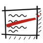
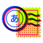

I make small tools for Obsidian. Nothing out there fit how I work, so I started making my own.
-
 Video SummaryA video link in, a finished note out.
139 downloads
Video SummaryA video link in, a finished note out.
139 downloads -

AI Assistant SuiteAI suggests title, tags and folder. You tick what to apply. 108 downloads -
 Git Note HistoryFind a sentence you deleted. Take back only that part.
103 downloads
Git Note HistoryFind a sentence you deleted. Take back only that part.
103 downloads -
 AI AccountingA receipt in, a checked ledger entry out.
97 downloads
AI AccountingA receipt in, a checked ledger entry out.
97 downloads -

Polyglot HelperLook up a word where you read. Meet it again. 94 downloads - Japan Work SecretaryPart-time shifts in Japan, warned before 28 hours. 69 downloads
-
 Pass CountdownUses left, time left, and the pace to finish.
55 downloads
Pass CountdownUses left, time left, and the pace to finish.
55 downloads - TaskNotes CountdownDeadlines from TaskNotes, and whether you will make it. 49 downloads
- NoesisRead a paper in three passes and come out able to explain it. web app
- BunmyakuTurn any Japanese material into a local study desk. web app
Downloads from Obsidian’s stats file, updated every morning. Last read . Raw numbers.
How I build
Local, fast, at hand.
Obsidian is good because it is local and quick, and my plugins keep it that way. If a feature slows the vault, I drop the feature.
The tool proposes, you decide, undo always.
An AI suggestion goes into your note only when you tick it, and you can undo anything a plugin writes.
When to act, and when to hand back.
Every plugin ended up asking me the same question: when should a tool act on its own, and when should it wait for you?
| Not sure? Don’t guess. | Git Note History links a renamed note to its past only when the text matches closely. |
|---|---|
| Short of facts? Count on the safe side. | Japan Work Secretary counts a shift in full until you confirm the break. |
| Retrying won’t help? Stop offering it. | Video Summary sorts its failures and hides Retry when the cause is on the other side. |
| You changed the note? Step back. | Before writing, the plugin compares the note again and stops if it moved. |
| Let the reader answer first. | Noesis asks you to explain a passage, then hints, and shows its answer only when you open it. |
| Don’t interrupt. | AI Assistant Suite moved from pop-ups to a side panel you open when you want it. |
How I work with AI.
AI writes most of the code, but not alone. I decide what is worth building, use every version, find what feels wrong and choose the fix. Along the way I have been learning to program, on purpose, and each plugin teaches me a bit more.
Where this is going.
Tools anyone can install in one click, then reshape with an AI agent until they fit the way that person works. That is what I wanted when nothing fit me.
Log
A research page: the question behind the tools, and what I want to study next.
I rebuilt this site as a wall. The counts update every morning.
One shared AI layer now runs inside four plugins: you enter a key once, and every error says what to try next.
My vault turned slow once, and I hated it. Since then, nothing I build gets to slow Obsidian down.
TaskNotes Countdown, a deadline board for another author’s plugin, gets its first release.
Git Note History, my first plugin, gets its first release.
Uses
- Notes
- Obsidian, one vault called Ithaca, with my own theme.
- Plugins
- TypeScript and esbuild on the Obsidian API. Notes stay Markdown; history stays in Git.
- Writing code
- Claude Code and Codex. Gemini reads long videos and PDFs for me.
- AI in the plugins
- You bring your own key. DeepSeek, Qwen, SiliconFlow, Kimi and Zhipu are built in.
- This site
- Plain HTML, CSS and JavaScript, no build step, on GitHub Pages. A GitHub Action updates the counts each morning.
- Machine
- MacBook Pro, M1 Pro.